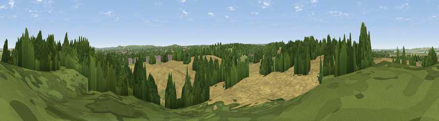

Viewpoint near Ospringe
#35774 in England · top 62% of its area beats it · near OspringeWhere it is
The exact computed spot (TQ 99375 61825). Click the marker for map links.
The view, rendered

A 360° render of this exact spot computed from the terrain model, tree cover and land cover — summer colours, afternoon light, calibrated against photographs of famous viewpoints. Real trees, hedges and buildings will differ in detail.
The panorama
Grey silhouette: terrain skyline in each direction (720 bearings, Earth curvature and refraction included). Dashed green: skyline with trees (+15 m) and buildings (+8 m) as obstacles. Blue strip: how far the ground is visible on each bearing.
Where the view opens
Wedge length = distance to the farthest visible ground on that bearing (vegetation-aware). Rings at 10, 25 and 50 km.
What fills the view
49% cropland · 34% woodland · 13% grassland · 3% built-up · 1% water
Angular shares of the visible panorama (visual magnitude), not map area. Landscape diversity 0.50 (0–1 Shannon).
Key numbers
More beautiful places nearby
The staircase of upgrades: each row has a higher view potential than everything closer. Driving times are estimates from straight-line distance, calibrated against real road routing — check an actual route before setting out.
| Place | Direction | Drive | Score |
|---|---|---|---|
| Viewpoint near Ospringe | WSW · 1 km | ~2 min | 48.7 |
| Viewpoint near Dunkirk | ESE · 8 km | ~16 min | 55.8 |
| Viewpoint near Eastchurch | N · 8 km | ~17 min | 57.0 |
| The Mount (Popsy's View) | SSE · 9 km | ~17 min | 61.7 |
| Viewpoint near Charing | SSW · 12 km | ~23 min | 68.6 |
| Viewpoint near Westwell | S · 14 km | ~25 min | 72.2 |
| Tolsford Hill | SSE · 29 km | ~45 min | 77.9 |
| Viewpoint near Capel-le-Ferne | SE · 34 km | ~52 min | 80.2 |
51.32058, 0.85988 · source: screening · position refined by local search. Computed location — check access rights before visiting.